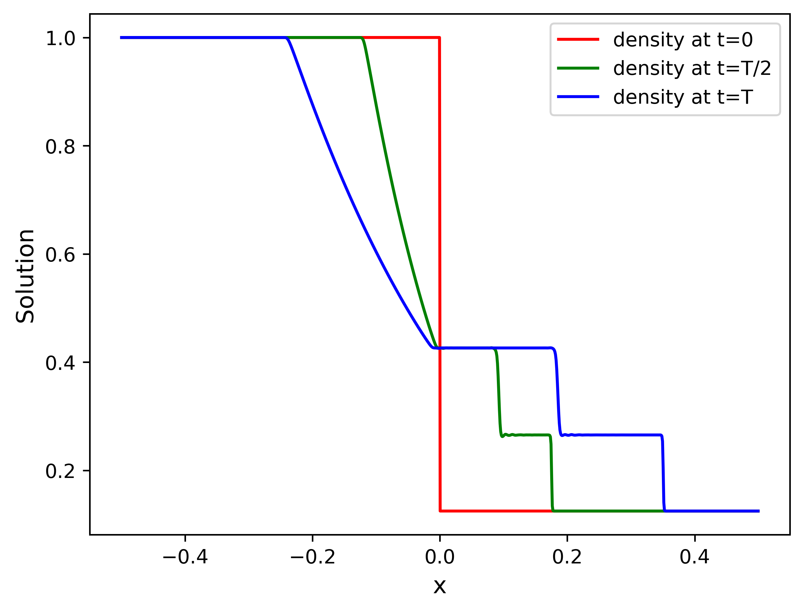

1D Euler Sod#
This problem solves the 1D conservative Euler equations for the Sod1d problem.
where the pressure \(p\) is related to the conserved quantities through the equation of the state
Initial conditions in primitive variables:
\(x<=0 :\quad \rho =1, u = 0, p = 1\)
\(x>0 :\quad \rho =1/8, u = 0, p = 0.1\)
These are used to create the initial conditions in conservative variables.
By default, \(\gamma = 1.4\)
Domain is \([-0.5, 0.5]\) with homogeneous Neumann BC
Typically, integration is performed over \(t \in (0, 0.2)\)
The problem is adapted from this paper
Mesh#
python3 pressio-demoapps/meshing_scripts/create_full_mesh_for.py \
--problem sod1d_s<stencilSize> -n <N> --outDir <destination-path>
where:
Nis the number of cells you want<stencilSize> = 3 or 5 or 7: defines the neighboring connectivity of each cell<destination-path>: full path to where you want the mesh files to be generated. The script creates the directory if it does not exist.
Important
When you set the <stencilSize>, keep in mind the following constraints (more on this below):
InviscidFluxReconstruction::FirstOrderrequires<stencilSize> >= 3InviscidFluxReconstruction::Weno3requires<stencilSize> >= 5InviscidFluxReconstruction::Weno5requires<stencilSize> >= 7
C++ synopsis#
#include "pressiodemoapps/euler1d.hpp"
int main(){
namespace pda = pressiodemoapps;
const auto meshObj = pda::load_cellcentered_uniform_mesh_eigen("path-to-mesh");
const auto probId = pda::Euler1d::Sod;
const auto scheme = pda::InviscidFluxReconstruction::FirstOrder; //or Weno3, Weno5
auto problem = pda::create_problem_eigen(meshObj, probId, scheme);
}
Python synopsis#
import pressiodemoapps as pda
meshObj = pda.load_cellcentered_uniform_mesh("path-to-mesh")
probId = pda.Euler1d.Sod
scheme = pda.InviscidFluxReconstruction.FirstOrder # or Weno3, Weno5
problem = pda.create_problem(meshObj, probId, scheme)
Sample Solution#
Representative plot for total simulation time \(T=0.2\) showing density at selected time steps \(t \in \left \{0, 0.1, 0.2\right \}\) obtained using time step \(dt = 10^{-4}\), Weno5, Runge-Kutta4 integration with a mesh of \(N=1000\) cells.
{kind=link}